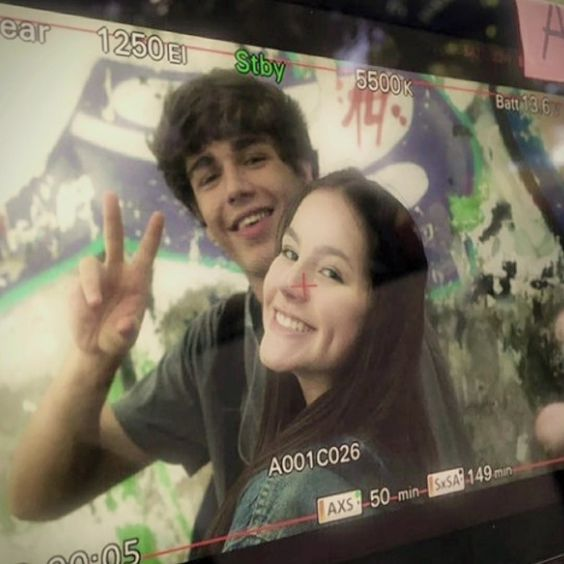

Léo e Fani no Filme
A adaptação cinematográfica de Fazendo Meu Filme trouxe à vida a história de Léo e Fani de uma maneira encantadora. Ao comparar com o livro, vemos que alguns momentos dos personagens não foram adaptadas, mas a essência dos livros permaneceu quase intacta. Apesar da demora para lançar o filme oficialmente, eu fiquei extremamente satisfeita com o resultado. Os atores Bela Fernandes e Xande Valois conseguiram representar os personagens com perfeição.